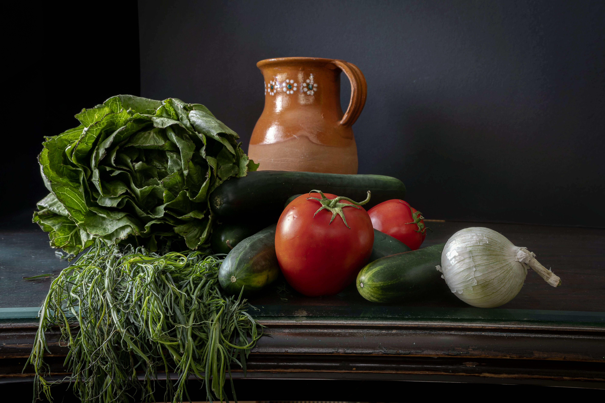
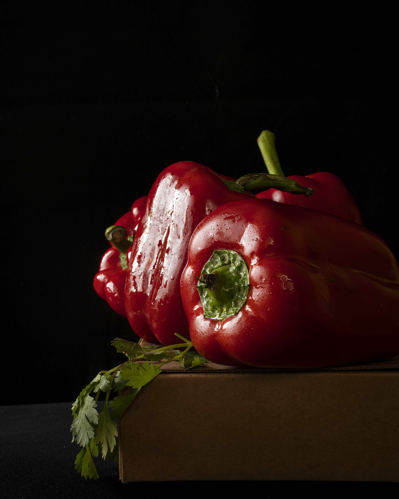

Fotografía
Still Life/Bodegón
Fotografía con cámara Digital
Resolución 96ppp
Características:
Producto u objeto retratados en la forma en que se perciben elementos de la realidad, con énfasis en cosas que remiten a lo cotidiano.

